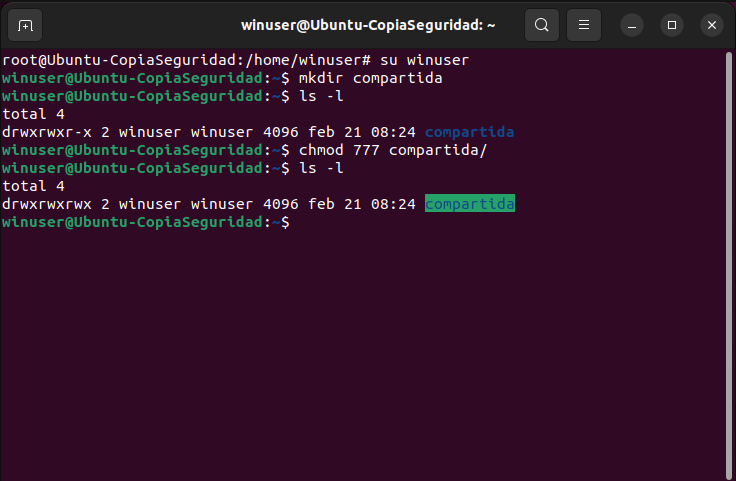

En la máquina virtual de ubuntu abrimos la terminal y nos logeamos como su que es el usuario root. Un identificativo de que estamos desde ese usuario es la # que aparece al final de la ruta. Ponemos el comando apt install samba y pulsamos ENTER empezara a instalarse hasta que nos pedira confirmación donde pulsamos y.
Una vez instalado, creamos el usuario donde se encontrara nuestra carpeta compartida. Con el comando adduser se crean usuarios desde la terminal de ubuntu. En nuestro caso lo llamaremos winuser, le pondremos una contraseña y pulsamos ENTER hasta que nos pregunte si la informacion es correcta donde pulsaremos y.
Con el comando su winuser nos cambiamos al usuario donde crearemos la carpeta compartida con el comando mkdir. Le daremos los permisos de lectura, escritura y ejecución, con el comando chmod 777 donde cada digito significa los diferetes permisos en binario. Una vez realizado usamos el comando ls -l para comprobar que se han aplicado los cambios.
